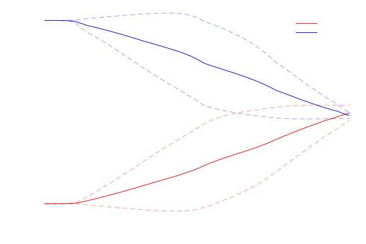
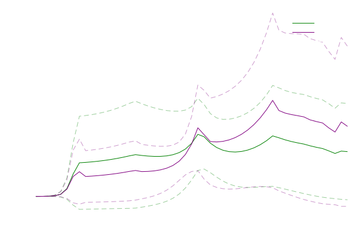

Pandemic Control
A stochastic optimal control problem were we seek to control the spread of a contagion with uncertain parameters.
Problem Statement and Model
We wish to determine optimal social distancing policy to control spread of a contagion and minimize the economic impact of doing so. We'll model the spread of the virus through a given population using the SEIR Model which considers 4 population subsets that follow:
\[\text{Susceptible} \rightarrow \text{Exposed} \rightarrow \text{Infectious} \rightarrow \text{Recovered}\]
This model is formalized as:
\[\begin{gathered} \frac{ds(t)}{dt} = (u(t) - 1)\beta si(t) \\ \frac{de(t)}{dt} = (1 - u(t))\beta si(t) - \xi e(t) \\ \frac{di(t)}{dt} = \xi e(t) - \gamma i(t)\\ \frac{dr(t)}{dt} = \gamma i(t) \\ si(t) = s(t) i(t) \end{gathered}\]
where $s(t)$ is the susceptible population, $e(t)$ is the exposed population, $i(t)$ is the infectious population, $r(t)$ is the recovered population, and $u(t) \in [0, 1]$ is the enforced population isolation (social distancing). The other values denote model parameters that will be specific to the contagion in question.
For our case study, we'll consider the incubation constant $\xi$ to be an uncertain parameter $\xi \sim \mathcal{U}(\underline{\xi}, \overline{\xi})$. This introduces to infinite dependencies into our model: time $t$ and uncertain incubation $\xi$. Moreover we'll seek to minimize the isolation measures $u(t)$ that are implemented while limiting the amount of infected individuals $i(t)$ to be below a threshold $i_{max}$. Thus, the optimization problem becomes:
\[\begin{aligned} &&\min_{} &&& \int_{t \in \mathcal{D}_{t}} u(t) dt \\ && \text{s.t.} &&& \frac{\partial s(t, \xi)}{\partial t} = (u(t) - 1)\beta si(t, \xi), && \forall t \in \mathcal{D}_{t}, \xi \in \mathcal{D}_{\xi} \\ &&&&& \frac{\partial e(t, \xi)}{\partial t} = (1 - u(t))\beta si(t, \xi) - \xi e(t, \xi), && \forall t \in \mathcal{D}_{t}, \xi \in \mathcal{D}_{\xi} \\ &&&&& \frac{\partial i(t, \xi)}{\partial t} = \xi e(t, \xi) - \gamma i(t, \xi), && \forall t \in \mathcal{D}_{t}, \xi \in \mathcal{D}_{\xi} \\ &&&&& \frac{\partial r(t, \xi)}{\partial t} = \gamma i(t, \xi), && \forall t \in \mathcal{D}_{t}, \xi \in \mathcal{D}_{\xi} \\ &&&&& si(t, \xi) = s(t, \xi) i(t, \xi), && \forall \forall t \in \mathcal{D}_{t}, \xi \in \mathcal{D}_{\xi} \\ &&&&& s(0, \xi) = s_0, e(0, \xi) = e_0, i(0, \xi) = i_0, r(0, \xi) = r_0, && \forall \xi \in \mathcal{D}_{\xi} \\ &&&&& i(t, \xi) \leq i_{max}, && \forall t \in \mathcal{D}_{t}, \xi \in \mathcal{D}_{\xi} \\ &&&&& u(t) \in [0, 0.8] \\ &&&&& \xi \sim \mathcal{U}(\underline{\xi}, \overline{\xi}) \end{aligned}\]
Notice that the SEIR model variables now all depend on both $t$ and $\xi$, except $u(t)$ which means we need to decide our policy before knowing the true value of $\xi$.
Modeling in InfiniteOpt
Traditional modeling frameworks like JuMP cannot be used to solve this model directly because it is infinite, contains partial difference equations, and contains a time expectation. We would first have to transform it into a transcripted (discretized) variant by applying all the necessary techniques (e.g., orthogonal collocation over finite elements, trapezoid rule, etc.) which is very combersome and nontrivial in this case.
However, we can directly model the above form in InfiniteOpt and it will take care of the rest! Let's get started by importing the needed packages and specifying the model parameters that we'll need.
using InfiniteOpt, Ipopt, Distributions, Plots
# Set the SEIR parameters
γ = 0.303
β = 0.727
N = 1e5
ξ_min = 0.1
ξ_max = 0.6
# Set the domain information
i_max = 0.02
ϵ = 0.005
t0 = 0
tf = 200
extra_ts = [0.001, 0.002, 0.004, 0.008, 0.02, 0.04, 0.08, 0.2, 0.4, 0.8]
num_samples = 5
# Set the intial condition values
e0 = 1 / N
i0 = 0
r0 = 0
s0 = 1 - 1 / N;
Model Initialization
Now let's setup our infinite model and select Ipopt as our optimizer that will be used to solve it. This is accomplished making an InfiniteModel:
model = InfiniteModel(Ipopt.Optimizer);
Infinite Parameter Definition
We now need to define the infinite parameters $t \in [t_0, t_f]$ and $\xi \sim \mathcal{U}(\underline{\xi}, \overline{\xi})$. This is accomplished with @infinite_parameter. We'll also include the following specifications:
- use 51 equidistant time points
- specify that orgothonal collocation using 2 nodes should be used for time derivatives
- specify that the number of random scenarios should equal
num_samples - add
extra_tsas extra time points
@infinite_parameter(model, t ∈ [t0, tf], num_supports = 51,
derivative_method = OrthogonalCollocation(2))
@infinite_parameter(model, ξ ~ Uniform(ξ_min, ξ_max), num_supports = num_samples)
add_supports(t, extra_ts)Infinite Variable Definition
With our infinite parameters defined, we can now define our infinite variables:
- $s(t, \xi) \geq 0$
- $e(t, \xi) \geq 0$
- $i(t, \xi) \geq 0$
- $r(t, \xi) \geq 0$
- $si(t, \xi)$
- $0 \leq u(t) \leq 0.8$
@variable(model, s ≥ 0, Infinite(t, ξ))
@variable(model, e ≥ 0, Infinite(t, ξ))
@variable(model, i ≥ 0, Infinite(t, ξ))
@variable(model, r ≥ 0, Infinite(t, ξ))
@variable(model, si, Infinite(t, ξ))
@variable(model, 0 ≤ u ≤ 0.8, Infinite(t), start = 0.2)u(t)Objective Definition
Now its time to add the objective $\min \ \int_{t \in \mathcal{D}_{t}} u(t) dt$ using @objective:
@objective(model, Min, ∫(u, t))∫{t ∈ [0, 200]}[u(t)]Constraint Definition
The last step now to defining our model is to define the constraints using @constraint. This will involve defining the initial conditions:
\[s(0, \xi) = s_0, e(0, \xi) = e_0, i(0, \xi) = i_0, r(0, \xi) = r_0, \ \forall \xi \in \mathcal{D}_{\xi}\]
the model equations:
\[\begin{aligned} &&& \frac{\partial s(t, \xi)}{\partial t} = (u(t) - 1)\beta si(t, \xi), && \forall t \in \mathcal{D}_{t}, \xi \in \mathcal{D}_{\xi} \\ &&& \frac{\partial e(t, \xi)}{\partial t} = (1 - u(t))\beta si(t, \xi) - \xi e(t, \xi), && \forall t \in \mathcal{D}_{t}, \xi \in \mathcal{D}_{\xi} \\ &&& \frac{\partial i(t, \xi)}{\partial t} = \xi e(t, \xi) - \gamma i(t, \xi), && \forall t \in \mathcal{D}_{t}, \xi \in \mathcal{D}_{\xi} \\ &&& \frac{\partial r(t, \xi)}{\partial t} = \gamma i(t, \xi), && \forall t \in \mathcal{D}_{t}, \xi \in \mathcal{D}_{\xi} \\ &&& si(t, \xi) = s(t, \xi) i(t, \xi), && \forall \forall t \in \mathcal{D}_{t}, \xi \in \mathcal{D}_{\xi}, \\ \end{aligned}\]
and the infection limit constraint:
\[i(t, \xi) \leq i_{max}, \ \forall t \in \mathcal{D}_t, \xi \in \mathcal{D}_{\xi}.\]
# Define the initial conditions
@constraint(model, s(0, ξ) == s0)
@constraint(model, e(0, ξ) == e0)
@constraint(model, i(0, ξ) == i0)
@constraint(model, r(0, ξ) == r0)
# Define the SEIR equations
@constraint(model, s_constr, ∂(s, t) == -(1 - u) * β * si)
@constraint(model, e_constr, ∂(e, t) == (1 - u) * β * si - ξ * e)
@constraint(model, i_constr, ∂(i, t) == ξ * e - γ * i)
@constraint(model, r_constr, ∂(r, t) == γ * i)
@constraint(model, si == s * i)
# Define the infection rate limit
@constraint(model, imax_constr, i ≤ i_max)imax_constr : i(t, ξ) ≤ 0.02, ∀ t ∈ [0, 200], ξ ~ UniformDisplay the Infinite Model
Let's display model now that it is fully defined:
print(model)Min ∫{t ∈ [0, 200]}[u(t)]
Subject to
s(t, ξ) ≥ 0.0, ∀ t ∈ [0, 200], ξ ~ Uniform
e(t, ξ) ≥ 0.0, ∀ t ∈ [0, 200], ξ ~ Uniform
i(t, ξ) ≥ 0.0, ∀ t ∈ [0, 200], ξ ~ Uniform
r(t, ξ) ≥ 0.0, ∀ t ∈ [0, 200], ξ ~ Uniform
u(t) ≥ 0.0, ∀ t ∈ [0, 200]
u(t) ≤ 0.8, ∀ t ∈ [0, 200]
s(0, ξ) = 0.99999, ∀ ξ ~ Uniform
e(0, ξ) = 1.0e-5, ∀ ξ ~ Uniform
i(0, ξ) = 0.0, ∀ ξ ~ Uniform
r(0, ξ) = 0.0, ∀ ξ ~ Uniform
s_constr : -0.727 si(t, ξ)*u(t) + ∂/∂t[s(t, ξ)] + 0.727 si(t, ξ) = 0.0, ∀ t ∈ [0, 200], ξ ~ Uniform
e_constr : 0.727 si(t, ξ)*u(t) + ξ*e(t, ξ) + ∂/∂t[e(t, ξ)] - 0.727 si(t, ξ) = 0.0, ∀ t ∈ [0, 200], ξ ~ Uniform
i_constr : -e(t, ξ)*ξ + ∂/∂t[i(t, ξ)] + 0.303 i(t, ξ) = 0.0, ∀ t ∈ [0, 200], ξ ~ Uniform
r_constr : ∂/∂t[r(t, ξ)] - 0.303 i(t, ξ) = 0.0, ∀ t ∈ [0, 200], ξ ~ Uniform
-i(t, ξ)*s(t, ξ) + si(t, ξ) = 0.0, ∀ t ∈ [0, 200], ξ ~ Uniform
imax_constr : i(t, ξ) ≤ 0.02, ∀ t ∈ [0, 200], ξ ~ Uniform
Optimize the Model
Let's solve our model and find the optimal policy. All we have to do is invoke optimize! and the model will automatically be transformed solved behind the scenes:
optimize!(model)This is Ipopt version 3.13.4, running with linear solver mumps.
NOTE: Other linear solvers might be more efficient (see Ipopt documentation).
Number of nonzeros in equality constraint Jacobian...: 8805
Number of nonzeros in inequality constraint Jacobian.: 305
Number of nonzeros in Lagrangian Hessian.............: 915
Total number of variables............................: 2806
variables with only lower bounds: 1220
variables with lower and upper bounds: 61
variables with only upper bounds: 0
Total number of equality constraints.................: 2745
Total number of inequality constraints...............: 305
inequality constraints with only lower bounds: 0
inequality constraints with lower and upper bounds: 0
inequality constraints with only upper bounds: 305
iter objective inf_pr inf_du lg(mu) ||d|| lg(rg) alpha_du alpha_pr ls
0 4.0000000e+01 9.90e-01 4.00e+00 -1.0 0.00e+00 - 0.00e+00 0.00e+00 0
1 1.2133698e+00 6.32e-01 2.47e+02 -1.0 9.90e-01 - 1.10e-02 3.62e-01f 1
2 1.4983271e+00 6.11e-01 2.40e+02 -1.0 7.49e-01 - 2.29e-01 3.25e-02f 1
3 2.8943680e+00 4.90e-01 2.02e+02 -1.0 6.11e-01 - 8.62e-01 1.99e-01f 1
4 2.8973644e+00 4.89e-01 2.00e+03 -1.0 5.54e-01 - 7.29e-02 1.33e-03h 1
5 3.5862378e+00 4.75e-01 6.31e+02 -1.0 4.19e+00 - 5.21e-04 2.88e-02h 1
6 3.6139816e+00 4.74e-01 6.23e+02 -1.0 5.01e+00 - 4.67e-03 9.83e-04h 1
7 3.7876815e+00 4.71e-01 6.43e+02 -1.0 3.90e+00 - 4.33e-03 7.76e-03h 1
8 4.4053669e+00 4.59e-01 3.31e+03 -1.0 3.86e+00 - 7.05e-03 2.56e-02h 1
9 4.8325839e+00 4.51e-01 3.33e+03 -1.0 3.52e+00 - 2.88e-02 1.74e-02h 1
iter objective inf_pr inf_du lg(mu) ||d|| lg(rg) alpha_du alpha_pr ls
10 5.0182899e+00 4.48e-01 3.33e+03 -1.0 3.08e+00 - 7.46e-03 6.65e-03h 1
11 5.3543635e+00 4.43e-01 3.25e+03 -1.0 5.04e+00 - 4.20e-03 9.81e-03h 1
12 6.0629684e+00 4.32e-01 3.19e+03 -1.0 2.36e+00 - 2.79e-02 2.52e-02h 1
13 7.5546829e+00 4.11e-01 2.93e+03 -1.0 2.24e+00 - 1.25e-02 4.93e-02h 1
14 8.4159224e+00 4.00e-01 2.85e+03 -1.0 1.99e+00 - 1.92e-02 2.70e-02h 1
15 1.1108121e+01 3.70e-01 2.59e+03 -1.0 1.81e+00 - 2.31e-02 7.35e-02h 1
16 1.2115483e+01 3.60e-01 2.53e+03 -1.0 1.43e+00 - 4.30e-02 2.77e-02h 1
17 2.0133265e+01 2.87e-01 2.11e+03 -1.0 1.41e+00 - 2.01e-02 2.03e-01h 1
18 3.3835993e+01 1.56e-01 9.08e+02 -1.0 6.55e-01 - 4.70e-02 4.57e-01h 1
19 4.1660769e+01 7.74e-02 5.71e+02 -1.0 4.64e-01 - 2.49e-01 5.03e-01h 1
iter objective inf_pr inf_du lg(mu) ||d|| lg(rg) alpha_du alpha_pr ls
20 4.7786979e+01 2.87e-02 1.81e+03 -1.0 3.52e-01 - 7.49e-02 6.29e-01h 1
21 5.0233907e+01 1.60e-02 1.01e+03 -1.0 3.49e-01 - 2.43e-01 4.42e-01h 1
22 5.1360041e+01 1.01e-02 6.38e+02 -1.0 4.97e-01 - 2.46e-01 3.66e-01h 1
23 5.3495083e+01 5.51e-03 7.67e+02 -1.0 5.29e-01 - 2.83e-01 4.57e-01h 1
24 5.4707476e+01 4.38e-03 6.49e+02 -1.0 4.80e-01 - 2.41e-01 2.06e-01h 1
25 5.5763155e+01 3.39e-03 5.00e+02 -1.0 9.67e-01 - 2.04e-01 2.26e-01h 1
26 5.6917753e+01 2.66e-03 4.68e+02 -1.0 4.81e-01 - 1.78e-01 2.14e-01h 1
27 5.8453625e+01 1.89e-03 7.68e+02 -1.0 2.67e-01 - 1.27e-01 2.92e-01h 1
28 5.9935751e+01 1.26e-03 1.49e+03 -1.0 3.95e-01 - 1.44e-01 3.30e-01h 1
29 6.0928979e+01 9.67e-04 1.51e+03 -1.0 3.19e-01 - 1.89e-01 2.36e-01h 1
iter objective inf_pr inf_du lg(mu) ||d|| lg(rg) alpha_du alpha_pr ls
30 6.1977065e+01 7.50e-04 1.63e+03 -1.0 2.51e-01 - 1.79e-01 2.24e-01h 1
31 6.3603098e+01 4.90e-04 3.85e+03 -1.0 2.69e-01 - 1.35e-01 3.47e-01h 1
32 6.5154979e+01 3.04e-04 6.52e+03 -1.0 3.19e-01 - 1.74e-01 3.79e-01h 1
33 6.6185185e+01 2.24e-04 6.02e+03 -1.0 4.58e-01 - 2.27e-01 2.66e-01h 1
34 6.6901134e+01 1.87e-04 1.48e+03 -1.0 3.91e-01 - 2.58e-01 1.65e-01h 1
35 6.8490066e+01 1.31e-04 8.03e+03 -1.0 4.38e-01 - 1.59e-01 2.99e-01H 1
36 6.9996747e+01 7.95e-05 8.09e+03 -1.0 2.86e-01 - 4.00e-01 4.49e-01H 1
37 7.1300053e+01 7.35e-05 2.08e+04 -1.0 3.21e-01 - 4.19e-01 5.47e-01H 1
38 7.2179654e+01 5.26e-05 5.40e+04 -1.0 2.73e-01 - 6.75e-01 8.50e-01H 1
39 7.2601821e+01 3.42e-06 1.08e+03 -1.0 1.45e-01 - 1.00e+00 1.00e+00H 1
iter objective inf_pr inf_du lg(mu) ||d|| lg(rg) alpha_du alpha_pr ls
40 7.1371230e+01 8.15e-05 5.87e+03 -1.7 9.28e-02 - 9.53e-01 9.52e-01f 1
41 7.0246537e+01 1.47e-04 2.39e+03 -1.7 1.61e-01 - 1.00e+00 9.36e-01f 1
42 7.0298679e+01 1.38e-05 1.04e+01 -1.7 6.66e-02 - 1.00e+00 1.00e+00f 1
43 6.9705725e+01 1.56e-05 2.85e+05 -3.8 1.13e-01 - 7.78e-01 6.35e-01f 1
44 6.9353670e+01 1.27e-05 2.36e+04 -3.8 1.94e-01 - 7.54e-01 8.18e-01f 1
45 6.9290565e+01 1.60e-06 2.86e+02 -3.8 2.15e-01 - 8.59e-01 8.85e-01f 1
46 6.9284012e+01 4.82e-08 6.61e+00 -3.8 2.02e-01 - 1.00e+00 1.00e+00f 1
47 6.9283976e+01 2.09e-10 8.39e-03 -3.8 5.99e-02 - 1.00e+00 1.00e+00h 1
48 6.9276342e+01 2.36e-09 1.57e+03 -5.7 1.16e-01 - 8.47e-01 9.53e-01f 1
49 6.9275893e+01 1.27e-11 3.80e-03 -5.7 8.28e-02 - 1.00e+00 1.00e+00f 1
iter objective inf_pr inf_du lg(mu) ||d|| lg(rg) alpha_du alpha_pr ls
50 6.9275892e+01 1.94e-16 6.74e-08 -5.7 4.27e-04 - 1.00e+00 1.00e+00h 1
51 6.9275791e+01 3.91e-13 5.92e-01 -8.6 3.65e-03 - 9.97e-01 1.00e+00f 1
52 6.9275791e+01 1.11e-16 2.33e-10 -8.6 1.70e-05 - 1.00e+00 1.00e+00h 1
Number of Iterations....: 52
(scaled) (unscaled)
Objective...............: 6.9275790998035603e+01 6.9275790998035603e+01
Dual infeasibility......: 2.3283064365386963e-10 2.3283064365386963e-10
Constraint violation....: 1.1102230246251565e-16 1.1102230246251565e-16
Complementarity.........: 2.5059567217454749e-09 2.5059567217454749e-09
Overall NLP error.......: 2.5059567217454749e-09 2.5059567217454749e-09
Number of objective function evaluations = 58
Number of objective gradient evaluations = 53
Number of equality constraint evaluations = 58
Number of inequality constraint evaluations = 58
Number of equality constraint Jacobian evaluations = 53
Number of inequality constraint Jacobian evaluations = 53
Number of Lagrangian Hessian evaluations = 52
Total CPU secs in IPOPT (w/o function evaluations) = 0.899
Total CPU secs in NLP function evaluations = 0.067
EXIT: Optimal Solution Found.
Retrieve and Plot the Results
Now we can retrieve the optimal results and plot them to visualize the optimal policy. Note that the values of infinite variables will be returned as arrays corresponding to how the supports were used to discretize our model. We can retrieve our values using value.
Get the results:
r_opt = value(r, ndarray = true) * 100 # make the population fractions into percentages
s_opt = value(s, ndarray = true) * 100
i_opt = value(i, ndarray = true) * 100
e_opt = value(e, ndarray = true) * 100
u_opt = value(u)
obj_opt = objective_value(model)
ts = value(t)
ξs = value(ξ);
Plot the values of $r(t, \xi)$ and $s(t, \xi)$ over time with confidence bounds:
r_mean = mean(r_opt, dims = 2)
r_std = std(r_opt, dims = 2)
plot(ts, r_mean, label = "r(t, ξ)", linecolor = :red, background_color = :transparent)
plot!(ts, r_mean + r_std, linecolor = :red, linestyle = :dash, linealpha = 0.4, label = "")
plot!(ts, r_mean - r_std, linecolor = :red, linestyle = :dash, linealpha = 0.4, label = "")
s_mean = mean(s_opt, dims = 2)
s_std = std(s_opt, dims = 2)
plot!(ts, s_mean, label = "s(t, ξ)", linecolor = :blue)
plot!(ts, s_mean + s_std, linecolor = :blue, linestyle = :dash, linealpha = 0.4, label = "")
plot!(ts, s_mean - s_std, linecolor = :blue, linestyle = :dash, linealpha = 0.4, label = "")
ylabel!("Pop. (%)")
xlabel!("Time (Days)")
Plot the values of $i(t, \xi)$ and $e(t, \xi)$ over time with confidence bounds:
i_mean = mean(i_opt, dims = 2)
i_std = std(i_opt, dims = 2)
plot(ts, i_mean, label = "i(t, ξ)", linecolor = :green, background_color = :transparent)
plot!(ts, i_mean + i_std, linecolor = :green, linestyle = :dash, linealpha = 0.4, label = "")
plot!(ts, i_mean - i_std, linecolor = :green, linestyle = :dash, linealpha = 0.4, label = "")
e_mean = mean(e_opt, dims = 2)
e_std = std(e_opt, dims = 2)
plot!(ts, e_mean, label = "e(t, ξ)", linecolor = :purple)
plot!(ts, e_mean + e_std, linecolor = :purple, linestyle = :dash, linealpha = 0.4, label = "")
plot!(ts, e_mean - e_std, linecolor = :purple, linestyle = :dash, linealpha = 0.4, label = "")
ylabel!("Pop. (%)")
xlabel!("Time (Days)")
Plot the values of $u(t)$ over time:
plot(ts, u_opt, linecolor = :orange, label = "u(t)", ylims = (-0.02, 1.02),
background_color = :transparent)
xlabel!("Time (Days)")
ylabel!("Distancing Ratio")
Maintenance Tests
These are here to ensure this example stays up to date.
using Test
@test termination_status(model) == MOI.LOCALLY_SOLVED
@test has_values(model)
@test u_opt isa Vector{<:Real}Test PassedThis page was generated using Literate.jl.